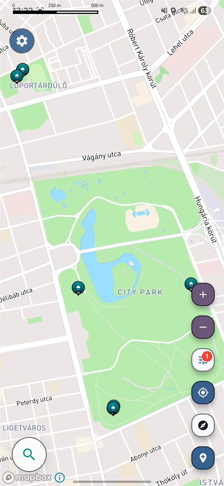

Praktische Reisekarte
Finde kostenlose Duschen auf Reisen
Duschmöglichkeiten sind über Foren, Tipp-Blogs und unvollständige Verzeichnisse verstreut – was es überraschend schwer macht, unterwegs frisch zu bleiben.
Kostenlos · iOS & Android

Screenshot from the Voyager Maps app showing nearby free shower locations.
Warum es unterwegs so schwer ist, Duschmöglichkeiten zu finden
- Kostenlose Duschen für Reisende gibt es verstreut auf Campingplätzen, in öffentlichen Einrichtungen, an Stränden und an Treffpunkten der Einheimischen – Orte, die man nicht so schnell findet.
- Rucksacktouristen, Camper, Radfahrer und Roadtripper verlassen sich oft auf vereinzelte Tipps, statt an einer zentralen Stelle nach Informationen zu suchen.
- Die meisten großen Karten-Apps legen bei der Planung eines längeren Reisetages keinen besonderen Wert auf praktische Hygienestationen.
Praktische Duschsuche speziell für unterwegs
Die App hilft dabei, sorgfältig ausgewählte Orte für echte Reisebedürfnisse zu finden, wodurch es einfacher wird, praktische Orte zu entdecken, die in herkömmlichen Suchergebnissen oft fehlen.
Nützliche Duschmöglichkeiten, die speziell für den praktischen Reisealltag ausgewählt wurden – statt allgemeiner, pauschaler Ortslisten.
Nützlich für das Leben im Wohnmobil, Rucksackreisen, Langstreckenfahrten und andere mobile Reiseformen.
Zeigt Orte an, die auf den meisten Karten nicht deutlich zu erkennen sind, wenn du dich unterwegs mal frisch machen musst.
Finde weitere Orte in der Nähe
Öffne die App, um weitere Duschmöglichkeiten in der Nähe deiner Route zu finden.
Kostenlose Reisekarte mit Duschmöglichkeiten für Roadtrips, Rucksackreisen und das Leben im Van
Die Suche nach einer kostenlosen Duschmöglichkeit auf Reisen beginnt meist dann, wenn Komfort kein nettes Extra mehr ist, sondern ein echtes Bedürfnis. Auf langen Roadtrips, mehrtägigen Städtereisen, Rucksacktouren, Radreisen oder beim Leben im Wohnmobil kann es überraschend schwierig sein, Zugang zu Duschen zu organisieren. Nützliche Orte gibt es vielleicht in der Nähe, aber sie sind oft über Community-Beiträge, lokale Empfehlungen, Strandinformationen oder Verzeichnisse von Einrichtungen verstreut, die sich nicht einfach an einem Ort zusammenfassen lassen.
Eine bessere kostenlose Duschkarte hilft dabei, diese Hürden zu überwinden, indem sie es einfacher macht, praktische Optionen in der Nähe zu finden. Anstatt sich nur auf allgemeine Kartensuchen zu verlassen, können Reisende gezielt nach nützlichen Duschorten suchen. Egal, ob du dich zwischen zwei Etappen deiner Reise erfrischen möchtest, einen Stopp während einer langen Autofahrt planst oder deine täglichen Routinen auch auf Reisen beibehalten willst – eine auf Reisen ausgerichtete Duschkarte macht die Suche praktischer. Das ist der Mehrwert kostenloser Reiseinformationen zu Duschen, die auf tatsächliche Fortbewegung und die alltäglichen Bedürfnisse von Reisenden zugeschnitten sind.